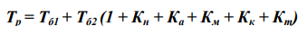
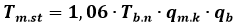

Mashgʻulotning maqsadi: Me’yoriy hujjatning strukturasi, uning elementlari, tuzilishi va bayon
etilishiga
qoʻyiladigan talablarni, shuningdek, me’yoriy hujjatlarni ishlab chiqishdagi mehnat sarfini aniqlashni
oʻrganish.
Me’yoriy hujjat strukturasi va uning elementlariga talablar. Me’yoriy hujjatlarni tuzish, bayon
qilish,
mundarija va rasmiylashtirishga talablar Oʻz DSt 1.6:2003 “Oʻz SDT. Me’yoriy hujjatlar. Tuzish, bayon
qilish, mundarija va rasmiylashtirishga talablar” davlat standarti tomonidan belgilangan. Standartda
keltirilgan nizomlar tarmoq, ma’muriy-hududiy darajadagi me’yoriy hujjatlarning va korxona
standartlarining tuzilishiga nisbatan majburiy emas, lekin MHni rasmiylashtirishda birlilikka erishish
uchun keltirilgan standartdagi nizomlarga amal qilish kerak.
Me’yoriy hujjatlarning tuzilishiga talablar
Me’yoriy hujjatlar tuzilishiga koʻra quyidagi tarkibiy qismlarga ega boʻlishi mumkin:
– sarvaraq;
– soʻz boshi;
– mundarija;
– kirish;
– nomi;
– qoʻllanish doirasi;
– me’yoriy havolalar;
– atamalar va ta’riflar;
– belgilar va qisqartmalar;
– talablar;
– ilovalar;
– bibliografik ma’lumotlar.
MHga qoʻshish uchun “Sarvaraq” (titul varaq), “Soʻz boshi”, “Mundarija”, “Nomi”, “Talablar”
majburiydir.
Me’yoriy hujjatning sarvarag‘ida uning belgisi va nomi keltiriladi:
Soʻz boshida mazkur hujjat toʻg‘risida umumiy ma’lumotlar keltiriladi me’yoriy hujjatni ishlab
chiqish
va tasdiqlashga taqdim qilish; ushbu me’yoriy hujjatning qaysi me’yoriy hujjat oʻrniga ishlab chiqilgani
toʻg‘risida ma’lumot va boshqlar.
Soʻz boshi sarvarag‘idan keyingi betda uning orqa tomonida joylashtiriladi va tegishli sarlavhadan
boshlanadi. Sarlavha betning yuqori qismida, oʻrtada, bosh harflar bilan yoziladi va quyuqroq shrift
bilan ajratiladi.
Mundarija me’yoriy hujjat hajmi oʻn betdan oshgan hollarda yoziladi. Mundarijaga boʻlimlarning
tartib
raqamlari va nomi (zarur boʻlganda kichik boʻlimlar nomi), ilovalar belgisi va sarlavhasi bilan, zarur
boʻlganda esa, grafik materiallar ham qaysi betda joylashganini koʻrsatib yoziladi.
Standart mundarijasi soʻz boshidan keyin, odatda yangi betdan boshlanadi. “Mundarija” soʻzi betning
oʻrta qismida bosh harflar bilan yoziladi.
Standartning nomi qisqa boʻlishi, standartlashtirish ob’ektini aniq tavsiflashi va standartni
standartlar axborot koʻrsatkichiga kiritish uchun uning toʻg‘ri tasniflanishini ta’minlashi lozim.
Standart nomida, odatda, qisqartmalar (mahsulotning shartli belgisidan tashqari), rim harflari,
matematik belgilar, yunon harflarining qoʻllanilishiga ruxsat etilmaydi.
Me’yoriy hujjatning nomi, odatda, sarlavha va kichik sarlavhadan iborat boʻlishi lozim.
Masalan: Oʻzbekiston standartlashtirish davlat tizimi. Asosiy atamalar va ta’riflar.
Agar me’yoriy hujjat asos boʻluvchi tashkiliy-metodik yoki umumtexnikaviy me’yoriy hujjatlar
tizimidan
iborat boʻlgan me’yoriy hujjatlar majmuiga kiradigan boʻlsa, bu holda me’yoriy hujjat sarlavhasidan
oldinda barcha me’yoriy hujjatlar majmui uchun umumiy boʻlgan va ushbu tizimning nomi hisoblangan
sarlavhalar guruhi keltiriladi.
Misol. “Oʻzbekiston standartlashtirish davlat tizimi. Texnik reglament. Asosiy nizomlar”.
Standartning “Qoʻllanish doirasi” uning qaysi doirada qoʻllanilishini va zarur boʻlganda
standartlashtirish obyektini aniqlash uchun keltiriladi, standartning birinchi betida joylashtiriladi va
1-boʻlim koʻrinishida rasmiylashtiriladi. Standartlashtirish ob’ektini aniqlashda quyidagi ifoda
qoʻllaniladi: “Ushbu standart... qoʻllaniladi”. Standartning mazmunini yoritishda “Ushbu standart...
belgilaydi” ifodasi qoʻllaniladi. Standartning qoʻllanish doirasini aniqlashda “Ushbu standart...
qoʻllaniladi” ifodasi qoʻllaniladi.
“Me’yoriy havolalar”, agar me’yoriy hujjatning matnida boshqa me’yoriy hujjatlarga me’yoriy
havolalar va
(yoki) bir xil yoki yuqoriroq darajadagi texnik-iqtisodiy va ijtimoiy axborot tasniflagichlari 2-boʻlim
koʻrinishida berilgan boʻlsa, keltiriladi. Havolada havola qilingan me’yoriy hujjatlarning roʻyxati,
ularning belgisi va nomi keltiriladi. Bular belgilarning roʻyxatga olingan raqamlarining oshib boruvchi
tartibida joylashtiriladi. Havolalar quyidagi tartibda bayon etiladi:
– davlatlararo standartlar;
– Oʻzbekiston davlat standartlari;
– tarmoq standartlari;
– ma’muriy-hududiy standartlar;
– texnik shartlar;
– korxona standartlari.
“Atamalar va ta’riflar” boʻlimi standartda foydalaniladigan atamalarni aniqlash va belgilash uchun
ta’rifni oʻz ichiga oladi. Ta’riflar roʻyxati “Mazkur standartda quyidagi atamalar va ta’riflar
qoʻllaniladi” soʻzlari bilan boshlanadi.
Standartlashtirish ob’ektlariga talablar, ob’ektlarning oʻziga xos xususiyatlariga qarab,
standartlarning quyidagi turlarida: asos boʻluvchi standartlarda, mahsulot (xizmatlar)ga standartlarda,
tekshirish metodlari standartlarida, jarayonlarga standartlarda belgilanadi.
Standart nizomlarini toʻldiruvchi materialni ilovada joylashtirish ruxsat etiladi.
Standartda bibliografik ma’lumotlar keltiriladi. Bular alohida varaqda, barcha ilovalardan keyin
joylashtiriladi. Standartning bibliografik ma’lumotlarida quyidagilar boʻladi:
– standartlar tasniflagichi boʻyicha guruh belgisi;
– muhim soʻzlar.
Standartlashtirish boʻyicha ishlarga mehnat sarfi va ishlar narxi normativlari buyurtmachi bilan
asosiy
bajaruvchi oʻrtasida shartnoma tuzishda shuningdek, ishlarni bajarish rejalarini ishlab chiqishda va
standartlashtirish doirasida ilmiy-texnikaviy mahsulotga baholarni oʻrnatishda ularning narxini
baholashda asosli yondashishga imkon beradi.
Mehnat sarfi va narx normativlari quyidagilarni aniqlash uchun zarur boʻladi:
– standartlashtirishni rejalashtirishda me’yoriy hujjatlarni ishlab chiqish, ularga oʻzgartirishlar
kiritish yoki qayta koʻrib chiqish smeta narxi;
– me’yoriy hujjatlarni bajaruvchilar va hamkor bajaruvchilar tomonidan ishlab chiqishga mehnat sarfi
va
smeta narxi;
– ilmiy-texnikaviy mahsulot narxi;
– me’yoriy hujjatlarni ishlab chiqish va joriy qilish iqtisodiy samaradorligini aniqlash.
Bunda quyidagi asosiy atamalar va ta’riflar qoʻllaniladi:
Normativ mehnat sarfi – muayyan ishni bajarish uchun zarur boʻlgan, kishi-soat yoki kishi-kunlarda
oʻlchanadigan, ish vaqti sarfining hisoblangan qiymati;
Vaqt normasi – mos operasion-texnikaviy sharoitlarda mos malakali bir ishchi yoki ishchilar guruhi
tomonidan ishlarning ma’lum hajmini bajarishga zarur vaqt sarfi.
Me’yoriy hujjatni bayon etishga talablar. Standartning oʻziga xos xususiyatlariga va
mazmuniga qarab, talablar matn, jadvallar, grafik material (rasmlar, sxemalar, diagrammalar) yoki
bularning birikmasi
koʻrinishida bayon qilinadi. Standart matni turlicha izohlanishiga yoʻl qoʻymaydigan, qisqa, aniq,
standartning qoʻllashish doirasiga muvofiq uni qoʻllanish uchun zarur va yetarli, mantiqiy izchil
boʻlishi lozim. Standartga faqat ob’ektiv metodlar bilan tekshirish mumkin boʻlgan tafsilotlar va
talablarni kiritish lozim. Standartda amaldagi standartlarda belgilangan
atamalar, ta’riflar, belgilar va qisqartmalar qoʻllanilishi kerak. Kattaliklarning eng katta yoki eng
kichik qiymatlarini keltirganda “koʻpi bilan (kamida)” iboralarini qoʻllanish lozim. Standartda
koʻrsatilgan me’yorlar, talablardan og‘ishlarning joiz qiymatlarini keltirishda “dan koʻp (kam)
boʻlmasligi kerak” iborasini qoʻllash kerak.
Standartda oʻrnatiladigan kattaliklarning son qiymatlari chekka og‘ishlari bilan yoki eng katta
(yoki)
eng kichik qiymatlar koʻrinishida koʻrsatilishi lozim. Son qiymatlarini foizlarda koʻrsatishda
quyidagicha: “... 63% dan 67% gacha” yoki “(65±2%) emas, balki ” (65±2)% yozish kerak. Rim harflari
faqat buyumning navini (toifasi, sinfi va b.) kimyoviy elementlarning valentligini, yilning
kvartallarini, yarim yillikni belgilashda qoʻllanilishi kerak. Qolgan hollarda arab raqamlari
qoʻllaniladi.
Hisob birliklari va fizik kattaliklar birliklarining belgilari jadvallarda, formulalarga kiradigan
simvollar va sonli koeffitsientlarni tushuntirishda va matnda, faqat sonli qiymatlarda qoʻllaniladi va
nuqtasiz yoziladi. Standartda quyidagilarga yoʻl qoʻyilmaydi:
– soʻzlashuv iboralarini, texnitsizm va kasbiylikni qoʻllanishi;
– bir tushunchaning oʻziga ma’nosi jihatdan yaqin turli ilmiy-texnikaviy atamalar (sinonimlar) ni,
shuningdek oʻzbek va rus tillarida teng ma’noli soʻzlar va atamalar mavjud boʻlgani holda chet soʻzlar
va atamalarni qoʻllanishi;
– ixtiyoriy yasama soʻzlarni qoʻllanishi;
– rus orfografiyasida belgilanganlardan boshqa qisqartma soʻzlarni qoʻllanishi.
Standart matnini boʻlimlarga ajratish kerak. Boʻlimlar moddalar (punktlar) ga yoki kichik boʻlimlar
va
moddalarga ajratilishi mumkin. Moddalar, zarur boʻlganda, kichik moddalarda boʻlinishi mumkin. Standart
matnini moddalarga va kichik moddalarga boʻlishda har bir modda, kichik modda tugal axborotni oʻz ichiga
olishi zarur. Boʻlimlar, kichik boʻlimlar, moddalar va kichik moddalarni arab raqamlari bilan belgilash
va abzasdan satr boshidan yozish kerak. Boʻlimlar me’yoriy hujjatdagi asosiy qismning butun matni
doirasida (ilovalar bundan mustasno) tartib raqamlari bilan belgilanadi.
Sarlavhalar boʻlimlar, kichik boʻlimlarning mazmunini aniq va qisqa aks ettirishi lozim. Boʻlimlar,
kichik boʻlimlar va moddalarning sarlavhalarini bosh harflar bilan oxiriga nuqta qoʻymasdan, abzasdan
boshlab yozish kerak. Moddalar yoki kichik moddalar ichida sanab koʻrsatishlar boʻlishi mumkin. Sanab
koʻrsatilgan har bir satr oldida defis yoki, zarur boʻlganda, standartning matnida sanab oʻtilganlarning
biriga havola qilishda kichik satr harflarini qoʻyish kerak. Kichik harfdan keyin qavs qoʻyiladi. Sanab
oʻtilganlarni keyinchalik ravshanlashtirish uchun arab raqamlaridan foydalanish zarur, bu raqamlardan
keyin qavs qoʻyiladi. Jadvallar koʻrsatkichlarning yaqqol ifodalanishi va taqqoslashning boʻlishi uchun
qoʻllaniladi. Jadval nomini jadval ustida joylashtirish lozim. Jadvalning bir qismini shu betning oʻzida
yoki boshqa betga koʻchirishda jadval nomi uning faqat birinchi qismi ustida joylashtiriladi.
Grafik material – rasmlar (sxemalar, diagrammalar va h.k.) standartga ob’ektning xossalarini yoki
tafsilotlarini yaxshi belgilash, shuningdek standart matnini yaxshi tushunish uchun joylashtiriladi.
Standart matnida grafik materialga havola berilgan boʻlishi kerak.
Standartlashtirish boʻyicha ish deganda, standartlashtirish boʻyicha ma’lum tashkiliy,
metodik yoki
texnik masalani yechishga qaratilgan, ilmiy xodimlar, mutaxassislar yoki texnik bajaruvchilar tomonidan
bajariladigan ishlar majmui (ilmiy-tadqiqot ishlari, asos boʻluvchi yoki bir turli mahsulotning muayyan
xiliga yoki guruhiga me’yoriy hujjatlarni ishlab chiqish, bularga oʻzgartirishlar kiritish, ekspertiza
oʻtkazish) tushuniladi.
Mehnat sarfini aniqlashga quyidagi bosqichlar kiradi:
– ishlab chiquvchi-tashkilot uchun mehnat sarfi normativlari asosida mehnat sarfini hisoblash;
– hamkor bajaruvchining qatnashish ulushini hisobga olgan holda ishlarga mehnat sarfini hisoblash;
– ishlarga ta’sir etuvchi omillarni hisobga olgan holda ishlarga umumiy mehnat sarfini hisoblash.
Mehnat sarfi normativlari me’yoriy hujjatni ishlab chiqishning barcha bosqichlarida ishlarga
sarflanadigan ish vaqti miqdori bilan aniqlanadi Ishlab chiqish bosqichlari:
-loyihalarni koʻrib chiqish va kelishish;
-ilmiy-texnikaviy va kelishuv kengashini oʻtkazish;
-ilmiytexnikaviy ekspertiza va b. dan iborat.
Agar me’yoriy hujjatni ishlab chiqishdan oldin ilmiy-tadqiqot va tajriba-konstruktorlik ishlari
oʻtkaziladigan boʻlsa, bu ishlarga sarflangan harajatlar ham hisobga olinishi lozim.
Mehnat sarfi normativlari ishlab chiqiladigan me’yoriy hujjat turiga va standartlashtirish
darajasiga
bogʻliq. Umumiy mehnat sarfi asosida ishlar narxi aniqlanadi. Me’yoriy hujjatning turiga qarab uni
ishlab chiqishga mehnat sarfi kishi-soatlarda quyidagi formula boʻyicha aniqlanadi:

Bu yerda: T b1 – me’yoriy hujjatni ishlab chiqishdan oldin oʻtkaziladigan ilmiytexnik va
tajriba-konstruktorlik ishlariga mehnat sarfining bazaviy (asos ) normativi, kishi-soat; Tb2 – me’yoriy
hujjatni ishlab chiqish bazaviy normativi, kishi-soat; KH, Ka, KM,
KK, Km – yangilik darajasini, axborot
hajmini, kelishishning murakkabligini, obyektning konstruktiv murakkabligini, tasdiqlovchi tashkilotlar
sonini hisobga oluvchi mos koeffisiyentlar.
Milliy standartni ishlab chiqishdagi mehnat sarfi quyidagi formula orqali aniqlanadi:

bu yerda: Tm.st – milliy standartni ishlab chiqishdagi mehnat sarfi; Tb.n – milliy standartni ishlab
chiqishdagi bazaviy normativi, kishi/oy; qm.k – milliy standartni ishlab chiqishning murakkablik
darajasini ifodalovchi koeffisient; qb – standartdagi betlar sonini hisobga oluvchi koeffisient.
Topshiriq. Talablar kichik guruhchalarga ajralgan holda quyidagi savollarga javob topib yozishadi va
oʻz
javoblarini guruh oldida himoya qilishadi.
Topshiriq savollari:
Me’yoriy hujjatlarni tuzish, bayon qilish, mundarija va rasmiylashtirishga talablar qaysi
standartda
belgilab berilgan?
1. Me’yoriy hujjatlar tuzilishiga koʻra qanday tarkibiy qismlarga ega boʻlishi mumkin?
2. Me’yoriy hujjatning nomi qanday tartibda koʻrsatilishi kerak?
3. Standartga me’yoriy havolalar qanday tarzda bayon etiladi?
4. Standartlashtirishdagi mehnat sarfi va narx normativlari nimalarni aniqlash uchun zarur boʻladi?
5. Me’yoriy hujjatni bayon etishga qanday talablar qoʻyilgan?
6. Standartlashtirishda mehnat sarfini aniqlashga qanday bosqichlar kiradi?
7. Me’yoriy hujjatning turiga qarab uni ishlab chiqishga mehnat sarfi va milliy standartni ishlab
chiqishdagi mehnat sarfi qanday aniqlanadi?
Mavzuni takrorlash uchun savollar:
1. Me’yoriy hujjat deganda nimani tushunasiz?
2. Me’yoriy hujjat tuzilishiga qanday talablar qoʻyiladi?
3. Standartning nomi qanday talablar asosida shakllantiriladi?
4. Standartlashtirish boʻyicha ishlarga mehnat sarfi va ishlar narxi normativlari haqida aytib
bering.
5. Me’yoriy hujjatni bayon etishga belgilangan talablarni aytib bering.
6. Standartlashtirish boʻyicha ish deganda nimani tushunasiz?